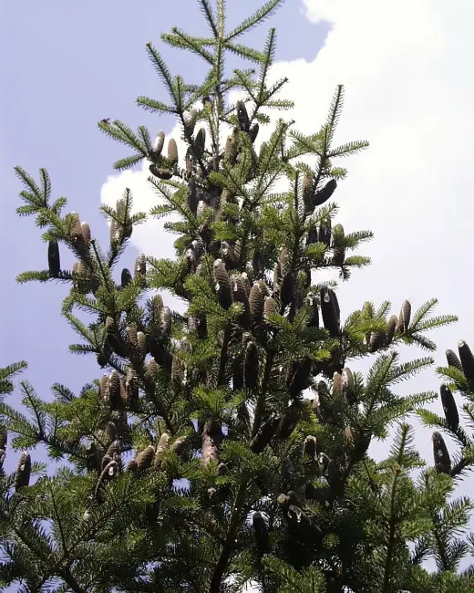

Balsam fir tips
Balsam fir tips is a edible flower or tea you can forage from May to June across Canada. Northern fir with flat, blunt needles that are white-striped underneath, upright cones and resin blisters on the bark.

When is balsam fir tips in season in Canada?
Balsam fir tips is usually in season May to June. Timing shifts with weather, latitude and altitude.
Where does balsam fir tips grow in Canada?
Balsam fir tips grows across Canada. Regions: British Columbia, Prairies, Ontario, Quebec, Atlantic Canada, The North.
How do you recognise balsam fir tips?
Northern fir with flat, blunt needles that are white-striped underneath, upright cones and resin blisters on the bark.
How do you harvest balsam fir tips?
Pick flowers on a dry, sunny morning once the dew has gone, when the scent is strongest. Take a few heads from each plant so it can still set fruit.
How do you eat balsam fir tips?
Bright green spring tips for tea, syrup, salt and shortbread.
How do you store balsam fir tips?
Dry or freeze tips.
What can be confused with balsam fir tips?
Yew (Taxus canadensis / T. brevifolia), rated deadly. Yew needles are flat and green on both sides with no white stripes and no resin smell. Yew has red, cup-shaped berries, not cones. Fir smells of resin; juniper berries are blue and dusty.
What is balsam fir tips good for?
Vitamin C.
What can you cook with balsam fir tips?
- Balsam fir syrup: Fir tips steeped in hot sugar syrup and strained.
- Balsam fir shortbread: Shortbread with ground fir tips.